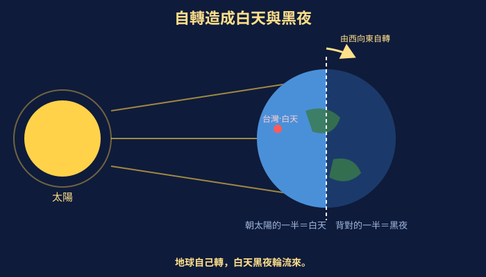
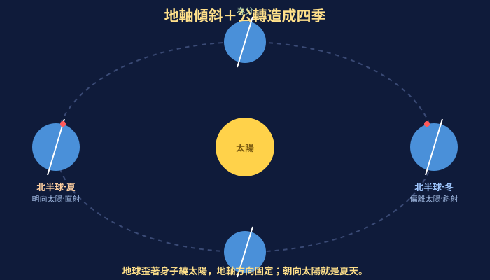
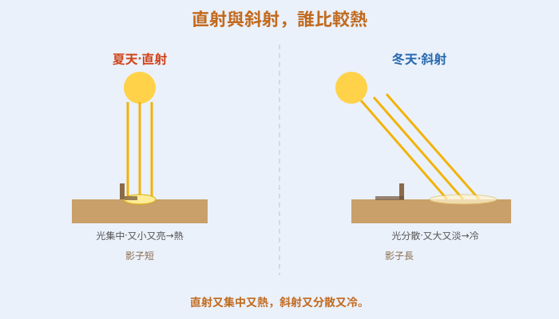
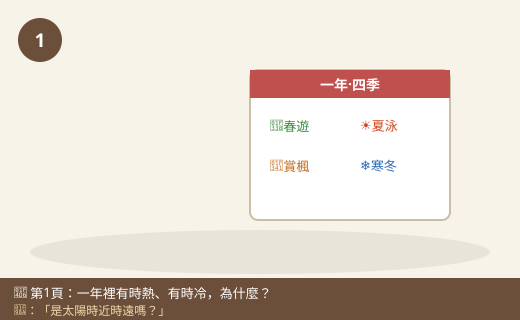
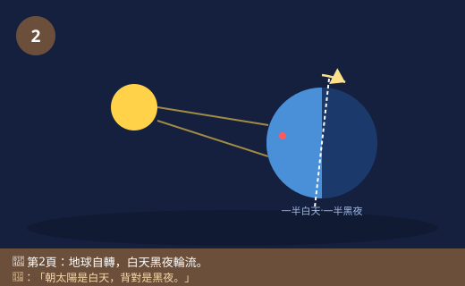
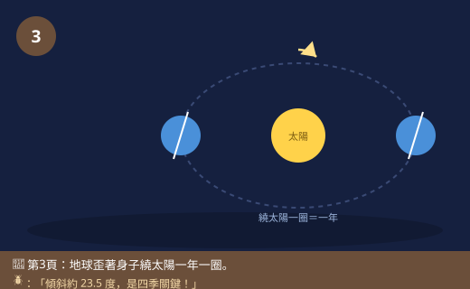
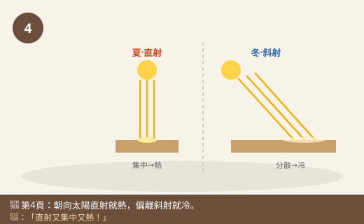
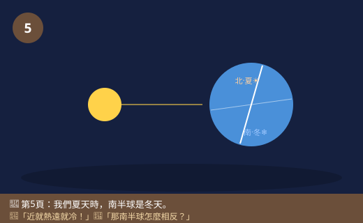
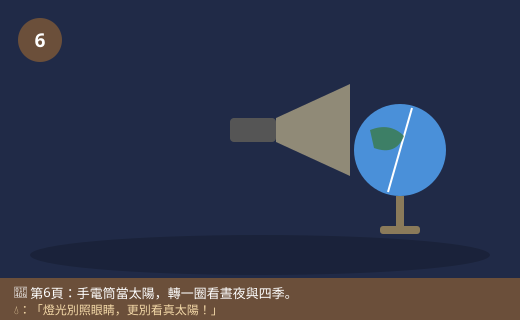

圖一（機制圖）：自轉造成白天與黑夜

- 圖像目的
- 說明地球自轉造成晝夜交替與太陽東升西落。
- 圖中應出現的元素
- 太陽在一側，地球一半亮（白天）一半暗（黑夜）；自轉方向箭頭（由西向東）；標台灣位置。
- 必須標示的科學概念
- 自轉→晝夜；朝太陽為晝、背太陽為夜。
- 圖說
- 「地球自己轉，白天黑夜輪流來。」
- AI 繪圖提示詞
- 溫暖手繪繪本風，左側太陽照亮地球右半，地球一半亮一半暗，標自轉箭頭與晝夜。繁體中文，白底。
- 避免畫錯的提醒
- 只有朝太陽的一半是白天；自轉方向由西向東。
💡 白天黑夜輪流來、春夏秋冬換季節。這一切，都是因為我們住的地球，一邊「自己轉圈圈」、一邊「繞著太陽跑」，而且它還是「歪著身子」的！
| 適合年級 | 國小六年級 |
|---|---|
| 可銜接年級 | 六年級 → 國中地球的運動、晝夜與四季 |
| 主題分類 | 地表、岩石與自然資源（天文） |
| 核心概念 | 地球自轉造成晝夜；地軸傾斜加上公轉造成四季 |
| 關鍵詞 | 自轉、公轉、地軸傾斜、晝夜、四季、太陽高度 |
| 可銜接的國中概念 | 地球的自轉與公轉、晝夜與四季成因、太陽直射與斜射 |
| 建議閱讀時間 | 約 18 分鐘 |
| 適合搭配的課堂活動 | 地球儀＋手電筒模擬晝夜、傾斜地軸繞燈公轉模擬四季、太陽高度與影長觀測 |
放學回家，小狐同學翻著牆上的日曆，發現媽媽在上面畫了記號：三月「春遊」、七月「暑假游泳」、十月「賞楓」、一月「跨年好冷」。他忽然愣住：「奇怪，一年就這樣一格一格過去，怎麼會有時候熱到只想吹冷氣、有時候冷到要穿厚外套？是太陽時大時小、離我們時近時遠嗎？」
他跑去問黑熊老師：「老師，夏天這麼熱，一定是因為太陽跑得離地球比較近；冬天這麼冷，一定是太陽離我們比較遠，對不對？」黑熊老師拿出一顆地球儀，笑著搖搖頭：「你猜得很合理，但答案會讓你嚇一跳——其實地球在夏天的時候，離太陽還稍微遠一點點呢！四季的祕密，不在『遠近』，而在地球『歪歪的身子』。」
小狐同學一頭霧水。黑熊老師轉動地球儀：「你看，地球一直在做兩件事。第一，它像陀螺一樣自己轉圈圈，這叫『自轉』，轉一圈是一天，轉到太陽的那面是白天、背對太陽的那面是黑夜——這就是白天黑夜為什麼會輪流。」小狐同學點點頭：「這個我懂，那季節呢？」
黑熊老師指著地球儀傾斜的軸：「第二件事，地球還會繞著太陽跑一大圈，這叫『公轉』，繞一圈要一年。重點來了——地球的『身子』（我們叫它地軸）是歪的、傾斜的！所以繞太陽的時候，有時候我們這邊（北半球）比較朝向太陽、被曬得又直又久，就是夏天；半年後轉到另一邊，我們這邊比較偏離太陽、曬得又斜又短，就是冬天。走，我們用地球儀和手電筒，把晝夜和四季通通變出來！」
黑熊老師，為什麼會有白天和晚上？
因為地球會自轉——像陀螺一樣繞著自己的軸轉，轉一圈大約 24 小時，就是一天。太陽只能照到地球的一半，被照到的那一面是白天、背對太陽的那一面是黑夜。地球一直轉，白天和黑夜就不停地輪流。不是太陽繞著我們跑，是我們自己在轉。
那太陽為什麼看起來早上從東邊升、傍晚往西邊落？
那是因為地球由西向東自轉，我們站在地球上，就會覺得太陽好像從東邊升起、往西邊落下——其實是我們自己轉過去的。就像你坐旋轉木馬，會覺得旁邊的景物在往後退一樣。
補一個關鍵冷知識！地球除了自轉，還會繞著太陽公轉，繞一圈要365 天多一點（所以每四年要補一個閏年2月29日）。而且地球的自轉軸是傾斜的（約 23.5 度），這個「歪」正是四季的關鍵！
地軸傾斜跟熱不熱有什麼關係？
關係可大了！當我們北半球朝向太陽時，太陽照得比較直（直射）、而且白天比較長，地面得到的熱又多又久，就是夏天；半年後地球跑到另一邊，北半球偏離太陽，太陽照得比較斜（斜射）、白天比較短，熱又少又短，就是冬天。同樣的陽光，直射比斜射集中、比較熱，就像手電筒直照和斜照，直照的光圈又小又亮。
所以南半球和我們相反？我們過夏天，他們過冬天？
完全正確！因為地軸傾斜，當北半球朝向太陽（夏天）時，南半球正好偏離太陽（冬天）。所以澳洲的耶誕節是在夏天過的，還有人去海邊玩呢！這更證明四季不是因為地球離太陽遠近，而是因為地軸傾斜＋公轉造成的。
我們用地球儀和手電筒來模擬！手電筒當太陽、地球儀當地球。安全提醒：手電筒的光不要照別人的眼睛，更不可以用它假裝太陽去看真正的太陽——真正的太陽永遠不能直接盯著看，會傷眼睛！模擬時把燈光壓低、對著地球儀就好。
哼，這太簡單了！夏天熱就是因為地球離太陽近，冬天冷就是離太陽遠啊！近一點當然熱、遠一點當然冷，跟什麼傾斜沒關係啦！
迷思怪獸，這是最有名的誤會之一喔！第一，地球繞太陽的軌道幾乎是圓的，遠近差別很小；而且北半球夏天時，地球其實離太陽還稍微遠一點！第二，如果是遠近決定，那全地球應該同時熱或同時冷，可是我們夏天時南半球卻是冬天——同一個地球、同樣的遠近，怎麼會一邊熱一邊冷？可見關鍵是地軸傾斜讓陽光有的地方直射、有的地方斜射，不是遠近！
原來是地球歪歪的身子在變魔術！我要用地球儀親自轉一圈看看。
地球一直在做兩件事。第一是自轉：像陀螺繞著自己轉，轉一圈是一天，朝太陽的那面是白天、背對的是黑夜，所以晝夜輪流；地球由西向東轉，我們才覺得太陽東升西落。第二是公轉：繞著太陽跑一大圈，繞一圈是一年。因為地球是歪著身子（地軸傾斜）的，公轉時我們這邊有時候比較朝向太陽——陽光直射、白天長，又熱又久，就是夏天；半年後比較偏離太陽——陽光斜射、白天短，就是冬天。四季不是因為地球離太陽遠近，證據是：我們夏天時，南半球正好是冬天。
自轉：地球繞地軸由西向東旋轉，週期約 24 小時，形成晝夜交替與太陽的視運動（東升西落）。公轉：地球繞太陽運行，週期約 365.25 日（故設閏年）。地軸與公轉軌道面約成 23.5° 傾斜且方向固定，使地球在軌道不同位置時，同一半球接受陽光的直射／斜射程度與白晝長短週期變化：夏季該半球較朝向太陽，陽光直射、日照時間長，單位面積獲得能量多、氣溫高；冬季較偏離，陽光斜射、日照短，能量分散、氣溫低。南北半球季節相反。四季主因是地軸傾斜，而非日地距離（近日點反而在北半球冬季）。
晝夜源於地球自轉；四季源於地軸傾斜（黃赤交角約 23.5°）與公轉。太陽直射點在南北回歸線之間週年往返：夏至直射北回歸線、冬至直射南回歸線、春秋分直射赤道。直射時太陽仰角高、輻射集中且日照長，故較熱。此亦解釋正午太陽高度與影長的季節變化、極區永晝永夜與不同緯度季節差異。國中地球科學「地球的運動」會量化太陽直射緯度、晝夜長短、太陽高度角，並連結曆法（回歸年、閏年）、節氣與氣候帶等概念。









| 適合年級 | 六年級 |
|---|---|
| 材料 | 地球儀（或插竹籤的保麗龍球當地球，籤代表地軸並保持傾斜）、手電筒（當太陽）、小貼紙（標台灣）、暗一點的房間、紀錄表 |
地球在公轉軌道上的位置（四個季節位置）。
北半球朝向太陽的程度、陽光是直射還是斜射（判斷季節）。
地軸傾斜方向與角度固定不變、同一支手電筒、同樣亮度與距離。
| 公轉位置 | 北半球朝向/偏離太陽 | 陽光直射/斜射 | 北半球季節 |
|---|---|---|---|
| 位置一 | |||
| 位置二 | |||
| 位置三 | |||
| 位置四 |
自轉時，台灣被照到就是白天、轉到背光面就是黑夜，證明晝夜由自轉造成。公轉時，只要地軸傾斜方向固定不變，就會發現：在某個位置北半球明顯朝向手電筒、被直射，那就是夏天；繞到對面的位置北半球偏離、被斜射，就是冬天；而這兩個位置南半球剛好相反。這證明四季是地軸傾斜加上公轉造成的（直射較熱、斜射較冷），不是因為地球離太陽的遠近。
⚠️ 安全提醒：手電筒的光不可以照別人的眼睛；這只是「模擬」，真正的太陽絕對不可以用眼睛直接看，會嚴重傷害眼睛。在較暗的房間進行時注意地面淨空、避免絆倒；保麗龍球插竹籤時小心尖端、由大人協助。地球儀輕拿輕放避免摔落。
👾 迷思說法：夏天熱是因為地球離太陽近，冬天冷是因為離太陽遠。
為什麼容易誤解：「近就熱、遠就冷」很符合直覺（像靠近火爐）。
✅ 正確說法：地球繞太陽的軌道幾乎是圓的，遠近差別很小；北半球夏天時地球其實還稍微遠一點。四季是地軸傾斜＋公轉，讓陽光有時直射（熱）、有時斜射（冷）造成的。
可以怎麼驗證：如果是遠近，全地球應同時冷熱；但我們夏天時南半球是冬天，可見不是遠近。
👾 迷思說法：是太陽繞著地球轉，才有白天和黑夜。
為什麼容易誤解：我們看到太陽在天上移動，好像它在繞我們。
✅ 正確說法：是地球自轉造成晝夜。地球由西向東自己轉，我們才覺得太陽東升西落。太陽並沒有繞著地球跑。
可以怎麼驗證：用地球儀自轉配手電筒，就能重現晝夜與太陽視運動。
👾 迷思說法：全世界的季節都一樣，現在我們夏天，全球都夏天。
為什麼容易誤解：覺得同一個地球應該同一個季節。
✅ 正確說法：因為地軸傾斜，南半球和北半球季節相反。我們（北半球）過夏天時，澳洲、紐西蘭（南半球）正在過冬天。
可以怎麼驗證：查澳洲的月份與季節，會發現他們的耶誕節（12 月）是夏天。
👾 迷思說法：地軸傾斜是地球「不小心歪掉」、不重要的小事。
為什麼容易誤解：覺得歪一點沒差。
✅ 正確說法：地軸傾斜約 23.5 度且方向固定，正是造成四季的關鍵。如果地軸不傾斜，地球就幾乎沒有明顯的四季變化了。
可以怎麼驗證：模擬時把地軸「打直」繞燈一圈，會發現四個位置光照幾乎一樣，沒有明顯四季。
👾 迷思說法：夏天太陽比較大顆，所以比較熱。
為什麼容易誤解：覺得熱一定是太陽變大變近。
✅ 正確說法：太陽大小沒有變。夏天熱是因為太陽照得比較直（直射）、白天比較長，地面單位面積得到的熱又多又久，不是太陽變大。
可以怎麼驗證：比較夏冬正午的太陽高度與影子長短、白晝長短，會發現差異來自角度與時間。
1. 白天和黑夜是由地球的什麼運動造成的？
(A) 公轉 (B) 自轉 (C) 地震 (D) 月亮繞地球
答案：B。自轉使朝太陽側為晝、背側為夜。
2. 地球公轉一圈（繞太陽一圈）大約要多久？
(A) 一天 (B) 一個月 (C) 一年 (D) 十年
答案：C。約 365 天多一點，所以有閏年。
3. 造成一年四季變化最主要的原因是？
(A) 地球離太陽的遠近 (B) 太陽變大變小 (C) 地軸傾斜加上公轉 (D) 月亮的位置
答案：C。地軸傾斜使陽光直射／斜射與晝長變化。
4. 當北半球是夏天時，南半球（如澳洲）是什麼季節？
(A) 也是夏天 (B) 冬天 (C) 沒有季節 (D) 春天
答案：B。地軸傾斜使南北半球季節相反。
5. 為什麼夏天比冬天熱？下列敘述何者正確？
(A) 夏天太陽離地球特別近 (B) 夏天陽光直射、白天長，熱得多又久 (C) 夏天太陽比較大 (D) 冬天太陽不見了
答案：B。直射能量集中、日照時間長，故較熱。
1. 請用「自轉」解釋為什麼會有白天和黑夜，以及為什麼太陽看起來從東邊升起。
因為地球會繞著自己的地軸自轉，太陽只能照亮地球的一半，朝向太陽的那面是白天、背對太陽的那面是黑夜，地球一直轉，晝夜就輪流。地球由西向東自轉，站在地球上的我們就會覺得太陽從東邊升起、往西邊落下。
2. 有人說「四季是因為地球離太陽有時近、有時遠」，請你用一個證據反駁這個說法。
如果四季是因為遠近，那全地球應該同時冷或同時熱。但事實上，我們北半球過夏天時，南半球（如澳洲）卻是冬天，同一個地球、同樣的遠近卻季節相反。這證明四季不是遠近造成的，而是地軸傾斜讓不同半球有的被直射（熱）、有的被斜射（冷）。
3. 為什麼「陽光直射」的地方比「陽光斜射」的地方熱？可以用手電筒怎麼說明？
因為直射時，同樣多的陽光集中照在比較小的地面上，單位面積得到的熱比較多，所以熱；斜射時，同樣的陽光散開照在比較大的地面上，每個地方分到的熱變少，所以比較冷。用手電筒垂直照桌面會看到又小又亮的光圈，斜著照會看到又大又淡的光圈，就能說明直射比斜射集中、比較熱。
1. 小狐在夏天和冬天的同一個時間（中午 12 點）、同一個地點，量了旗桿的影子長度。你覺得哪一季的影子會比較長？這和太陽的高度、直射斜射有什麼關係？
冬天中午的影子會比較長。因為冬天太陽在天空的高度比較低、陽光比較斜射，斜射的光讓物體投出比較長的影子；夏天太陽高度高、比較直射，影子就比較短。所以量正午影長可以反映太陽高度與直射／斜射的季節變化，也再次說明四季與陽光角度有關。
2. 假設有一顆星球，它會自轉但地軸「完全不傾斜」（打直的）。你覺得這顆星球上會有明顯的白天黑夜嗎？會有明顯的四季嗎？為什麼？
會有明顯的白天黑夜，因為只要會自轉，就會有朝太陽（白天）和背太陽（黑夜）的輪替。但幾乎不會有明顯的四季，因為四季主要來自地軸傾斜；地軸不傾斜的話，繞太陽一圈中各地被陽光照射的角度和白晝長短幾乎都不變，就沒有明顯的季節變化。這說明晝夜靠自轉、四季靠地軸傾斜＋公轉，是兩件不同的事。
| 向度 | 待加強（1） | 通過（2） | 優秀（3） |
|---|---|---|---|
| 概念理解 | 認為遠近決定四季 | 能說明自轉晝夜、傾斜公轉四季 | 能用直射斜射、南北半球相反完整論證 |
| 建模技能 | 無法操作模型 | 能用地球儀模型呈現晝夜與四季 | 能設計並解釋影長/晝長等延伸觀測 |
| 科學態度 | 忽視用眼安全 | 遵守不照眼、不看太陽 | 主動以模型證據破除迷思並說明 |
| 檢核項目 | 結果 | 備註 |
|---|---|---|
| 科學概念是否正確 | ✅ | 自轉致晝夜、地軸傾斜約23.5°＋公轉致四季、直射斜射、南北半球相反、近日點於北半球冬季，敘述正確。 |
| 是否符合年級理解程度 | ✅ | 六年級以日曆季節、地球儀模型切入，定性為主。 |
| 是否有錯誤或過度簡化的比喻 | ✅ | 「歪著身子」「手電筒直照斜照」比喻恰當，未造成錯誤模型。 |
| 是否清楚區分觀察、推論與解釋 | ✅ | 由模型觀察朝向/直射，推論四季成因並以南北半球相反驗證。 |
| 圖像提示詞是否可能造成誤解 | ✅ | 已提醒地軸方向固定、四季非遠近、直射斜射光圈與影長。 |
| 實驗是否安全 | ✅ | 強調手電筒不照眼、絕不直視太陽、暗室防絆倒，安全低成本。 |
| 是否需要補充資料來源 | ✅ | 對應 INc-Ⅲ-13、INc-Ⅲ-14 與探究學習表現；自轉公轉系統內容屬國中，見教師補充。 |
| 是否適合轉成 HTML 網頁 | ✅ | 結構完整，含互動測驗與摺疊區。 |